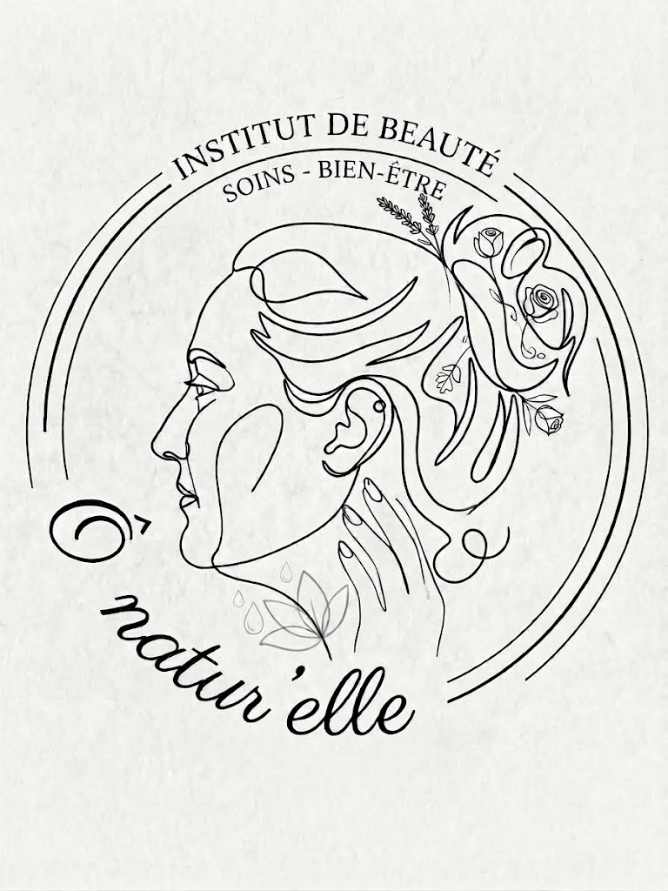

01

Beauté & bien-être · Prototype Figma, mobile & desktop
Ô Natur'Elle — Prototype complet pour un institut de beauté
Ô Natur'Elle est un institut de beauté premium fondé par une esthéticienne diplômée. Pour ce vrai projet client, j'ai conçu de bout en bout un prototype Figma complet et responsive, avec pour fil conducteur d'aider une cliente indécise à trouver le bon soin et à réserver sans friction — vitrine des soins, diagnostic beauté personnalisé, réservation en 3 étapes, boutique et galerie.
- Portée : plus de 30 écrans, déclinés en mobile et desktop
- Fonctionnalité phare : diagnostic en 4 questions qui recommande un soin adapté
- Parcours : réservation en 3 étapes avec confirmation animée